사회조사분석사-2급 (2013-06-02 기출문제)
1과목: 조사방법론 I
1. 자신의 신분을 밝히지 않은 채 자연스럽게 일어나는 사회적 과정에 참여하는 관찰자의 역할은?
- 완전 참여자
- 완전관찰자
- 참여자적 관찰자
- 관찰자적 참여자
(정답률: 68%)

2. 면접조사에서 응답내용의 신빙성을 저해하는 최근정보효과(recency effect)에 관한 설명으로 옳은 것은?
- 질문지(questionnaire)를 사용하는 사회조사 보다는 조사표(interview schedule)를 사용하는 면접조사에서 자주 발생한다.
- 무학이나 저학력 응답자들은 아무리 최근에 입수 한 주요한 정보와 직결된 내용일지라도 어려운 질문 내용은 잘 이해할 수 없어 조사의 실효성을 감소시킨다.
- 무학이나 저학력 응답자들은 면접 직전에 면접자로부터 접하게 된 면접자의 생각이나 조언을 거의무비판 적으로 따라서 응답하는 경향이 있다.
- 무학이나 저학력 응답자들은 제일 먼저 들었던 응답내용을 그 다음에 들은 응답내용에 비해 훨씬 정확하게 기억하게 된다.
(정답률: 35%)
3. 과학적 방법에 관한 설명으로 틀린 것은?
- 경험적 증거에 기반하여 지식을 탐구한다.
- 체계적이고 포관적인 방법에 의존한다.
- 절대적 결정론을 추구한다.
- 재현과 반복의 가능성이 높다.
(정답률: 69%)
4. 면접조사와 비교하여 전화조사의 장점이 아닌 것은?(오류 신고가 접수된 문제입니다. 반드시 정답과 해설을 확인하시기 바랍니다.)
- 면접자의 영향을 통제할 수 있다.
- 표본오차의 통제에 유용하다.
- 조사에 소요되는 시간이 짧다.
- 비용이 적게 든다.
(정답률: 59%)
5. 비 반응적(nonreactive) 자료수집방법으로 가장 적합한 것은?
- 참여적 관찰을 하는 것
- 일기, 편지 등 사적인 문서를 수집하는 것
- 조사대상자를 심층 면접하는 것
- 자기기입식 설문조사를 하는 것
(정답률: 68%)
6. 질적 연구에 관한 설명으로 틀린 것은?
- 정보의 출처나 자료수집 방법을 다양하게 한다.
- 개방형 질문을 통해 심층적인 정보를 얻어낸다.
- 조사 초기에 설정한 분석들을 도중에 변경해서는 안 된다.
- 연구과정에서 자료를 분석해가면서 자료를 범주화 한다.
(정답률: 67%)
7. 다음의 사례에서 활용한 연구방법은?
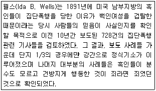
- 내용분석법
- 서베이법
- 투사법
- 종단연구
(정답률: 73%)
8. 기술적 조사의 연구문제로 적합하지 않은 것은?
- 대도시 인구의 연령별 분포는 어떠한가?
- 아동복지법 개정에 찬성하는 사람의 비율은 얼마인가?
- 어느 도시의 도로확충이 가장 시급한가?
- 가족 내 영유아 수와 의료지출은 어떤 관계를 가지는가?
(정답률: 51%)
9. 다음은 과학적 방법의 특징 중 무엇에 관한 설명인가?
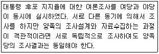
- 논리적 일관성
- 검증가능성
- 상호주관성
- 재생가능성
(정답률: 48%)
10. 관찰시기와 행동발생의 일치여부를 기준으로 관찰방법을 분류한 것은?(오류 신고가 접수된 문제입니다. 반드시 정답과 해설을 확인하시기 바랍니다.)
- 자연적 관찰과 인위적 관찰
- 공개적 관찰과 비공개적 관찰
- 체계적 관찰과 비체계적 관찰
- 직접관찰과 간접관찰
(정답률: 57%)
11. 다음 사례에서 사용한 조사 설계는?
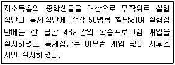
- 통제집단 사전-사후검사 설계 (pretest-posttest control group design)
- 통제집단 사후검사 설계 (posttest-only control group design)
- 단일집단 사전-사후검사 설계 (one-group pretest-posttest design)
- 정태집단 비교 설계 (static group comparison design)
(정답률: 65%)
12. 양적 연구와 질적 연구를 통합한 혼합연구방법 (mixed method) 에 관한 설명으로 틀린 것은?
- 질적 연구결과에서 양적 연구가 시작될 수 없다.
- 주제에 따라 두 가지 연구방법의 비중은 상이할 수 있다.
- 다양한 패러다임을 수용할 수 있어야 한다.
- 질적 연구결과와 양적 연구결과는 상반될 수 있다.
(정답률: 74%)
13. 패널조사의 단점에 대한 설명으로 틀린 것은?
- 원 조사대상이 이사를 하거나 사망하여 패널소멸이 일어날 경우 연구결과가 왜곡될 수 있다.
- 반복되는 조사를 통하여 응답자가 조사의 의도를 파악하여 연구결과가 왜곡될 수 있다.
- 장기간의 조사과정으로 조사자와 친밀해져서 부정확한 자료를 제공할 수 있다.
- 다른 조사방법에 비해 변화를 감지할 수 있는 가능성이 비교적 낮다.
(정답률: 75%)
14. 다음 중 귀납법에 관한 설명으로 틀린 것은?
- 귀납적 논리의 마지막 단계에서는 가설과 관찰 결과를 비교하게 된다.
- 경험의 세계에서 관찰된 많은 사실들이 공통적인유형으로 전개되는 것을 발견하고 이들의 유형을 객관적인 수준에서 증명하는 것이다.
- 특수한 (specific) 사실을 전제로 하여 일반적 (general) 진리 또는 원리로서의 결론을 내리는 방법이다.
- 관찰된 사실 중에서 공통적인 유형을 객관적으로 증명하기 위하여 통계적 분석이 요구된다.
(정답률: 52%)
15. 다음 중 집단조사의 단점과 가장 거리가 먼 것은?
- 피조사자를 한 장소에 모으는 것이 쉽지 않은 경우가 있다.
- 집단상황이 응답을 왜곡시킬 가능성이 있다.
- 피조사자의 수준이 동일하다고 가정하는 오류를 범할 수 있다.
- 응답의 누락이 많다.
(정답률: 74%)
16. 다음 사례에 내재된 연구설계의 타당성 저해요인이 아닌 것은?
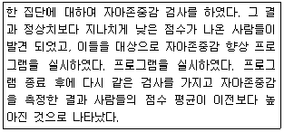
- 검사효과 (testing effect)
- 도구효과 (instrumentation)
- 통계적 회귀 (statistical regression)
- 성숙효과 (maturation effect)
(정답률: 37%)
17. 다음 [ ] 안에 알맞은 것은?
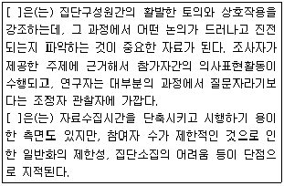
- 델파이조사
- 초점집단조사
- 사례연구조사
- 집단실험설계
(정답률: 63%)
18. 질문 문항의 배열순서에 대한 설명으로 틀린 것은?
- 간단한 사항을 묻는 문항을 먼저 배열한다.
- 교육수준, 소득과 같은 항목은 중간에 배열한다.
- 관련성이 있는 항목은 가능한 연속하여 배열한다.
- 질문은 논리적 순서에 따라 배열한다.
(정답률: 63%)
19. 개방형 질문의 장점으로 옳은 것은?
- 통계분석이 용이하다.
- 수량화하기 쉽다.
- 탐색적으로 사용할 수 있다.
- 무응답이나 거절의 빈도를 줄일 수 있다.
(정답률: 68%)
20. 단일사례실험연구 (단일사례연구)에 관한 설명으로 옳은 것은?
- 외적타당도가 높다.
- 실험적 처치를 필요로 하지 않는다.
- 개입의 효과를 관찰하는 것이 주요 목적이다.
- 외생변수를 쉽게 통제할 수 있다.
(정답률: 41%)
21. 다음 중 설문지 사전검사(pre.test)의 주된 목적은 ?
- 응답자의 분포를 확인한다.
- 질문들이 갖고 있는 문제들을 파악한다.
- 본 조사의 결과와 비교할 수 있는 자료를 얻는다.
- 조사원들을 훈련한다.
(정답률: 70%)
22. 과학적 조사의일반적인 절차를 바르게 나열한 것은?
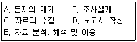
- A→ B→ C→ E→ D
- B→ A→ C→ E→ D
- A→ C→ B→ D→ E
- C→ A→ B→ D→ E
(정답률: 79%)
23. 실험설계에서 무작위화(randomization)를 사용하는 이유와 가장 거기라 먼 것은?
- 가설을 타당하게 검증하기 위해 필요한 장치다.
- 실험처치 전에 실험집단과 통제집단의 상태를 동질하게하기 위한 것이다.
- 종속변수의 체계적 변이(variation)를 극대화 시키기 위한 방법이다.
- 실험에 간섭하는 외생변수를 통제하기 위한 방법.
(정답률: 59%)
24. 가설의 특성과 가장 거리가 먼 것은?
- 문제를 해결해 줄 수 있어야 한다.
- 매개변수가 있어야 한다.
- 검증될 수 있어야 한다.
- 변수로 구성되며, 변수들간의 관계를 나타내고 있어야 한다.
(정답률: 61%)
25. 실험설계에 관한 설명으로 틀린 것은?
- 실험의 검증력을 극대화 시키고자 하는 시도이다.
- 연구가설의 진위여부를 확인하는 구조화된 절차이다.
- 실험의 내적 타당도를 확보하기 위한 노력이다.
- 조작적 상황을 최대한 배제하고 자연적 상황을 유지해야하는 표준화된 절차이다.
(정답률: 73%)
26. 관찰자료수집의 장점에 해당하지 않는 것은?
- 관찰자의 주관성 개입방지
- 즉각적 자료수집 가능
- 비언어적 자료수집 가능
- 종단분석 가능
(정답률: 63%)
27. 다음은 어떤 질문 방식에 해당하는가?
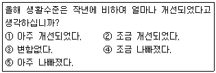
- 이분형 질문 (dichotomous questions)
- 평정형 질문 (rating questions)
- 서열형 질문 (ranking questions)
- 해당자 질문 (contingency questions)
(정답률: 42%)
28. 사회과학적 연구의 일반적인 연구 목적과 가장 거리가 먼 것은?
- 사건이나 현상들을 설명(explanation) 하는 것이다.
- 사건이나 상황을 기술 또는 서술(description) 하는 것이다.
- 사건이나 상황을 예측(prediction)하는 것이다.
- 새로운 이론(theory)이나 가설(hypothesis)을 만드는 것이다.
(정답률: 61%)
29. 횡단연구(cross-sectinal research)에 관한 설명으로 옳은 것은?
- 정해진 연구대상의 특정 변수 값을 여러 사정에 걸쳐 연구한다.
- 패널연구에 비하여 인간관계를 더 분병하게 밝힐 수 있다.
- 여러 연구 대상들을 정해진 한 시점에서 연구, 분석, 하는 방법이다.
- 집단으로 구성된 패널에 대하여 여러 시점에 걸쳐 연구한다.
(정답률: 63%)
30. 생태학적 오류(ecological fallacy)의 예로 적합한 것은?
- 빈곤의 원인을 개인적인 습성과 태도의 요인으로만 설명하려는 것
- 장애인 시설의 건립은 찬성하지만, 자기거주지역에 건립은 반대
- 인간의 태도와 행위는 언제나 차이가 있다는 가정에서 비롯되는 오류
- 외국인 근로자의 비율이 높은 지역에서 범죄율이 높다는 조사결과로 외국인근로자의 범죄증가를 논의하는 것
(정답률: 65%)
2과목: 조사방법론 II
31. 다음에 나타나는 측정상의 문제점은?
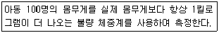
- 타당성이 없다
- 대표성이 없다
- 안정성이 없다
- 일관성이 없다
(정답률: 79%)
32. 질적변수 (qualitative variable)와 양적변수 (quantitative variable)에 관한 설명으로 틀린 것은?
- 성별, 종교, 직업, 학력 등을 나타내는 변수는 질적변수이다.
- 질적변수에서 양적변수로의 변환은 거의 불가능하다.
- 계량적 변수 혹은 메트릭(matric) 변수라고 불리는 것은 양적 변수이다.
- 양적 변수는 몸무게나 키와 같은 이산변수와 자동차의 판매대수와 같은 연속변수로 나누어진다.
(정답률: 45%)
33. 다음은 어떤 변수에 대한 설명인가?
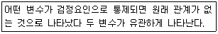
- 예측변수
- 왜곡변수
- 억제변수
- 종속변수
(정답률: 54%)
34. 일반적인 표본추출과정을 바르게 나열한 것은?
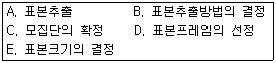
- C→ D→ B→ E→ A
- D→ C→ B→ E→ A
- B→ D→ C→ E→ A
- C→ B→ D→ E→ A
(정답률: 61%)
35. 다음 중 실용성과 효율성이 높다고 인정되며, 총화평정기법(summated rating technique) 이라고도 불리는 척도는?
- 서스톤척도 (Thurstone scale)
- 리커트척도 (Likert scale)
- 거트만척도 (Guttman scale)
- 어의차이척도 (semantic differential scale)
(정답률: 64%)
36. 집단구성원 상호간에 존재하는 사회적 거리의 강도를 측정하기 위해 개발된 척도는?
- 보가더스척도
- 소시오매트리
- 서스톤척도
- 리커트척도
(정답률: 51%)
37. 개념타당성(construct validity) 종류 중 다음 ( ) 안의 들어갈 내용으로 옳은 것은?
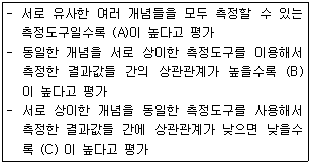
- A: 이해타당성, B: 집중타당성, C: 판별타당성
- A: 집중타당성, B: 판별타당성, C: 이해타당성
- A: 판별타당성, B: 이해타당성, C: 집중타당성
- A: 이해타당성, B: 판별타당성, C: 집중타당성
(정답률: 54%)
38. 신뢰성 측정방법 중 재검사법(test-retest method) 에 관한 설명으로 틀린 것은?
- 동일한 측정대상에 대하여 동일한 측정도구를 통해 일정 시간간격을 두고 반복적으로 측정하여 그 결과값을 비교, 분석하는 방법이다.
- 서로 다른 측정도구를 비교하거나 실제 현상에 적용 시키는데 매우 용이하다.
- 측정시간의 간격이 크면 클수록 신뢰성은 높아진다.
- 외생변수의 영향을 파악하기 어렵다.
(정답률: 45%)
39. 개념(concept)에 관한 설명으로 틀린 것은?
- 개념은 이론의 핵심적 구성요소이다.
- 개념은 특정대상의 속성을 나타낸다.
- 개념 자체를 직접 경험적으로 측정할 수 있다.
- 개념의 역할은 실제연구에서 연구방향을 제시 해준다.
(정답률: 67%)
40. 경험의 세계와 추상적인 관념의 세계를 연결시켜주는 수단으로서 일정한 법칙에 따라 사물이나 사건의 속성에 숫자를 부여하는 과정은?
- 측정
- 척도
- 조작적 정의
- 부호화
(정답률: 52%)
41. 다음은 어떤 표본추출방법에 관한 설명인가?
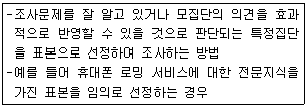
- 편의표본추출방법
- 판단표본추출방법
- 할당표본추출방법
- 이론적 표본추출방법
(정답률: 62%)
42. 척도의 종류 중 비율척도에 관한 설명으로 틀린것은?
- 절대적인 기준을 가지고 속성의 상대적 크기비교 및 절대적 크기까지 측정 할 수 있도록 비율의 개념이 추가된 척도이다
- 수치상 가감승제와 같은 모든 산술적인 사칙연산이 가능하다.
- 비율척도로 측정된 값들이 가장 많은 정보를 포함하고 있다고 볼 수 있다.
- 월드컵 축구 순위 등이 대표적인 예이다.
(정답률: 73%)
43. 조작적 정의에 관한 설명으로 틀린 것은?
- 추상적인 개념을 구체적인 경험세계와 연결시키는 과정이다.
- 특정 개념은 반드시 1가지 조작적 정의만을 갖는다.
- 조사목적과 관련하여 실용주의적인 측면을 포함한다.
- 실행 가능성 및 관찰 가능성이 중요하다.
(정답률: 69%)
44. 층화표본추출방법에 관한 설명으로 틀린 것은?
- 모집단을 특정한 기준에 따라 서로 상이한 소집단으로 나누고 이들 각각의 소집단들로부터 빈도에 따라 적절한 일정수의 표본을 무작위로 추출하는 방법이다.
- 무작위로 표본을 추출할 때보다 표본의 대표성을 높일 수 있는 방법이다.
- 확률표본추출방법 중 가장 많은 시간, 비용 및 노력을 절약할 수 있다.
- 모집단을 일정한 분류기준에 따라 소집단들로 분류한 후 각 소집단별로 표본을 추출한다는 점에서 할당표본추출방법과 유사하다.
(정답률: 59%)
45. “노인의 사회참여가 높을수록 자아존중감이 향상되고, 자아존중감의 향상으로 생활만족도가 높아진다.“에서 자아존중감은 어떤 변수인가?
- 종속변수
- 매개변수
- 외생변수
- 통제변수
(정답률: 70%)
46. 다음 중 표본의 대표성이 가장 큰 표본추출방법은?
- 편의표본추출법
- 판단표본추출법
- 군집표본추출법
- 할당표본추출법
(정답률: 51%)
47. 측정의 신뢰성을 향상시킬 수 있는 방법과 가장 거리가 먼 것은?
- 측정도구에 포함된 내용이 측정하고자 하는 내용을 대표할 수 있도록 한다.
- 응답자가 모르는 내용은 측정하지 않는다.
- 측정항목의 모호성을 제거한다.
- 측정항목의 수를 늘린다.
(정답률: 39%)
48. 다음 ( ) 안에 들어갈 알맞은 것은?
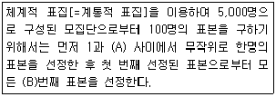
- A: 50, B: 50
- A: 10, B: 50
- A: 100, B: 50
- A: 100, B: 100
(정답률: 52%)
49. 다음 중 표본오류의 크기에 영향을 미치는 요인과 가장 거리가 먼 것은?
- 모집단의 분산 정도
- 문항의 무응답
- 표본의 크기
- 표본추출방법
(정답률: 41%)
50. 표본추출률 또는 표집비율(sampling fraction)이란?
- 실험집단의 크기에 대한 통제집단의 크기
- 모집단의 크기에 대한 표본집단의 크기
- 두 개 표본집단간의 동질성을 비교한 것
- 현지실험과 현지조사의 차이를 비교한 것
(정답률: 73%)
51. 리커트(LiKert) 척도에서 문항들이 단일차원을 이루는지를 확인할 수 있는 방법은?
- 요인분석
- 희귀분석
- 구조방정식모형
- 재생계수 계산
(정답률: 48%)
52. 다음 중 표집틀(sampling frame)이 모집단 (population)보다 큰 경우는?
- 한국대학교 학생을 학생등록부를 이용해서 표집하는 경우
- 한국대학교 학생을 교문 앞에서 임의로 표집하는 경우
- 한국대학교 학생을 서울지역 휴대폰 가입자 명부를 이용해서 표집하는 경우
- 한국대학교 학생을 무선적 전화기 (random digitdialing) 방법으로 표집하는 경우
(정답률: 46%)
53. 다음 중 불포함 오류에 관한 설명으로 옳은 것은?
- 표본조사를 할 때 표본체계가 완전하게 되지 않아서 발생하는 오류이다.
- 표본추출과정에서 선정된 표본 중 일부가 연결이 되지 않거나 응답을 거부했을 때 생기는 오류이다.
- 면접이나 관찰과정에서 응답자나 조사자 자체의 특성에서 생기는 오류이다.
- 정확한 응답이나 행동을 한 겨로가를 조사자가 잘못 기록하거나 기록된 설문지나 면접지가 분석을 위하여 처리되는 과정에서 틀려지는 오류다.
(정답률: 31%)
54. 다음 중 척도에 대한 설명으로 틀린 것은?
- 복합적인 자료를 분석하기 위한 단순한 측정치로 요약하기 위해서 척도구성을 한다.
- 연구자는 다양한 문항들이 동일한 차원을 다루는 하나의 척도를 구성하는지 보기 위해 척도법을 사용한다.
- 측정치 또는 측정수준의 오류를 줄이고 그 타당성과 신뢰성을 높이는 하나의 기법이 곧 척도법이다.
- 개별 문항들을 집약하지 않고 모두 지표로 인정함으로써 보다 효율적으로 주어진 현상을 측정할 수 있다.
(정답률: 58%)
55. 유권자들이 국회의원이 자질에 대해 어떻게 느끼고 있는가를 알아보기 위해 형용사들을 양극단에 배치하여 (예 신뢰-불신) 측정하는 척도 구성방법은?
- 리커트(Likert) 척도
- Q분류(q-sort) 척도
- 어의차이(semantic differential) 척도
- 서스톤(thurstone) 척도
(정답률: 65%)
56. 경제민주화에 대한 신문사설의 입장을 평가하기 위해 다수의 인원이 각 신문사설의 내용을 분류한다고 가정할 때 같은 입장의 사설을 다르게 분류할 경우 나타날 수 있는 문제는?
- 타당도
- 신뢰도
- 유의도
- 후광효과
(정답률: 55%)
57. 표본의 크기를 결정하는데 고려해야 하는 요인과 가장 거리가 먼 것은?
- 신뢰도
- 표본추출방법
- 모집단의 동질성
- 수집된 자료가 분석되는 범주의 수
(정답률: 32%)
58. 입사시험의 타당도를 시험점수와 합격 후 업무수행 우수성 간의 관계에 의해 파악할 경우 이는 어떤 유형의 타당도에 해당하는가?
- 내용타당도
- 구성타당도
- 동시타당도
- 예측타당도
(정답률: 62%)
59. 전수조사와 비교한 표본조사의 장점으로 틀린 것은?
- 시간과 비용을 절약할 수 있다.
- 단시간 내에 많은 정보를 얻을 수 있다.
- 표본오류가 줄어든다.
- 조사과정을 보다 잘 통제할 수 있어서 정확한 자료를 얻을 수 있다.
(정답률: 69%)
60. 도박중독자의 심리적 상태를 파악하기 위해 처음 알게 된 도박중독자로부터 다른 대상을 소개받고, 다시 소개받은 대상으로부터 제3의 대상자를 소개받는 절차로 이루어지는 표본추출방법은?
- 유의표집
- 집락표집
- 눈덩이표집
- 비비례적 층화표집
(정답률: 74%)
3과목: 사회통계
61. 선형회귀모형에서 오차항에 관한 설명으로 틀린 것은?
- 오차의 확률분포의 평균은 1이다
- 각 오차는 근사하게 정규분포를 따른다.
- 오차의 확률분포의 분산은 독립변수의 모든 값에 대해 동일하다.
- 각 오차는 서로 독립적이다.
(정답률: 39%)
62. 다음 중 이항분포의 특징이 아닌 것은?
- 실험은 n개의 동일한 시행으로 이루어진다.
- 각 시행의 결과는 상호 배타적인 두 사건으로 구분된다.
- 성공할 확률 P는 매 시행마다 일정하다.
- 각 시행은 서로 독립적이 아니라도 가능하다.
(정답률: 51%)
63. 정규모집단 N (μ ,σ2)에서 추출한 확률표본 X1, X2, …,Xn의 표본분산
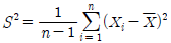
에 대한 설명으로 옳은 것은?- S2 은 σ2의 불편추정량이다.
- S는 σ2 의 불편추정량이다.
- S2은 카이제곱분포를 따른다.
- S2 의 기댓값은 σ2/n 이다.
(정답률: 37%)
64. 단순회귀모형 y = β0 + β1x + ε, ε ~ N(0,σ2 을 이용한 적합된 회귀식
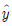
= 30 + 40x 에 대한 설명으로 옳은 것은?- 종속변수가 0 일 때, 독립변수 값은 0.44이다.
- 독립변수가 0 일 때, 종속변수 값은 0.44이다.
- 종속변수가 한 단위 증가할 때, 독립변수의 값은 평균 0.44 증가한다.
- 독립변수가 한 단위 증가할 때, 종속변수의 값은 평균 0.44 증가한다.
(정답률: 35%)
65. Corr(X,Y)가 X와 Y의 상관계수를 나타낼 때, 성립하지 않는 내용을 모두 짝지은 것은?
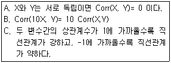
- A, B
- A, C
- B, C
- A, B, C
(정답률: 24%)
66. 카이제곱검증에 의해 성별과 지지하는 정당 사이에 관계가 있는지를 알아보기 위해 자료를 조사한 결과, 남자 200명 중 A정당 지지자가 140명, B정당 지지자 60명, 여자 200명중 A정당 지지자가 80명, B정당 지지자 120명이다. 성별과 정당 사이에 관계가 없을 경우 남자와 여자 각각 몇 명이 B정당을 지지한다고 기대할 수 있는가?
- 남자 : 50명, 여자 : 50명
- 남자 : 60명, 여자 : 60명
- 남자 : 80명, 여자 : 80명
- 남자 : 90명, 여자 : 90명
(정답률: 37%)
67. 어느 여론조사기관에서 고등학교 학생들의 흡연율을 조사하고자 한다. 95% 신뢰수준에서 흡연율 추정의 오차한계가 2% 이내가 되도록 하려면 표본의 크기는 얼마이어야 하는가? (단, 표준정규분포를 따르는 확률변수 Z 에 대해 P(Z>1.96) = 0.025를 만족한다.)
- 4321
- 5221
- 4201
- 2401
(정답률: 40%)
68. 확률변수 X가 이항분포 B(36,1/6)를 따를 때, 확률변수 Y=(
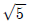
X+2)의 표준편차는?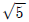
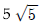
- 5
- 6
(정답률: 37%)
69. 표본상관계수가 0.32일 때, 유의수준 10% 하에서 모집단 사오간계수가 0이 아니라고 결론을 내리고자 한다. 다음 결과를 이용하여 표본의 수가 최소한 몇 개가 필요한지 구하면?(단, t0.⑤(23)=1.714, t0.⑤(24)=1.711, t0.⑤(25)=1.708, t0.⑤(26)=1.706)
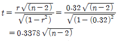
- 25
- 26
- 27
- 28
(정답률: 17%)
70. 어떤 모수에 대한 바람직한 추정량이 되기 위해 요구되는 성질이 아닌 것은?
- 비편향성
- 유효성(효율성)
- 일치성
- 등분산성
(정답률: 38%)
71. 정규분포에 관한 설명으로 틀린 것은?
- 정규분포곡선은 자유도에 따라 모양이 달라진다.
- 정규분포는 평균을 기준으로 대칭인 종모양의 분포를 이룬다.
- 평균, 중위수, 최빈수가 동일하다.
- 정규분포에서 분산이 클수록 정규분포곡선은 양 옆으로 퍼지는 모습을 한다.
(정답률: 49%)
72. 5개의 자료값 10, 20, 30, 40, 50 의 특성으로 옳은 것은?
- 평균 30, 중앙값 30
- 평균 35, 중앙값 40
- 평균 30, 최빈값 50
- 평균 25, 중앙값 10
(정답률: 61%)
73. 회귀분석을 실시한 결과로 다음 분산분석표를 얻었다. 결정계수는 얼마인가?
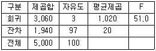
- 60.0%
- 60.7%
- 61.2%
- 62.1%
(정답률: 48%)
74. 다음 중 아래의 분산분석표에 관한 설명으로 틀린 것은?
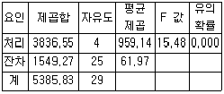
- 분산분석에 사용된 집단의 수는 5개이다.
- 분산분석에 사용된 관찰값의 수는 30개이다.
- 평균제곱은 제곱합을 자유도로 나눈 값이다.
- 유의확률이 0 이므로 처리집단별 평균에는 차이가 없다고 볼 수 있다.
(정답률: 47%)
75. 다음은 경영학과, 컴퓨터정보과에서 15점 만점인 중간고사 결과이다. 두 학과 평균의 차이에 대한 95% 신뢰구간은?(문제 오류로 자료가 누락되어 있습니다. 정확한 자료 내용을 아시는분께서는 자유게시판 또는 관리자 메일로 부탁 드립니다. 정답은 1번 입니다.)
- -0.15 ± 1.96
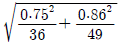
- -0.15 ± 1.645
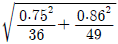
- -0.15 ± 1.96
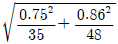
- -0.15 ± 1.645
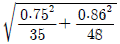
(정답률: 38%)
76. 어느 학생은 버스 또는 지하철을 이용하여 등교하는데 버스를 이용하는 경우가 40%, 지하철을 이용하는 경우가 60% 라고 한다. 또한 버스로 등교하면 교통체증으로 인하여 지각하는 경우가 10%이고, 지하철로 등교하면 지각하는 경우가 4%라고 한다. 이 학생이 어느날 지각하였을 때 버스로 등교하였을 확률은?
- 64.5%
- 62.5%
- 40%
- 4%
(정답률: 37%)
77. 다음은 성별에 따라 빨강, 파랑, 노랑 세 색상에 대한 선호도의 차이가 있는지를 알기 위해 한 초등학교 남학생 200명과 여학생 200명을 임의로 추출하여 선호도를 조사한 분할표이다. 성별에 따라 선호하는 색상의 차이가 없다면, 파랑을 선호하는 여학생 수에 대한 기대 도수의 추정값은?
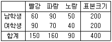
- 70
- 75
- 80
- 85
(정답률: 42%)
78. 다음 중 자료의 산포도를 나타내는 측도는?
- 중앙값
- 사분위수
- 백분위수
- 사분위범위
(정답률: 43%)
79. 중심극한정리(central limit theorem)는 어느 분포에 관한 것인가?
- 모집단
- 표본
- 모집단의 평균
- 표본의 평균
(정답률: 44%)
80. 세 집단의 평균이 서로 같은지 다른지를 검정하기 위하여 각 집단에서 크기가 6, 7, 11 인 표본을 각각 추출하였다. 이 때, 작성되는 분산분석표의 평균오차제곱합(MSE)의 자유도는?
- 23
- 21
- 20
- 19
(정답률: 45%)
81. 두 모집단의 분산이 같지 않다고 가정하여 평균차이를 검정했을 때 유의수준 5%하에서 통계적으로 평균차이가 유의하였다. 만약 두 모집단의 분산이 같은 경우, 가설 검정결과의 변화로 틀린 것은?
- 유의확률이 작아진다.
- 평균차이가 존재한다.
- 표준오차가 커진다.
- 검정통계량 값이 커진다.
(정답률: 27%)
82. 회귀분석에서 결정계수 R2 에 대한 설명으로 틀린 것은? (단, SST 는 총제곱합, SSR는 회귀제곱합, SSE는 잔차제곱합)
- R2 =
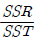
- -1 ≤ R2 ≤ 1
- SSE가 작아지면 R2 은 커진다.
- R2 은 독립변수의 수가 늘어날수록 증가하는 경향이 있다.
(정답률: 38%)
83. 10명의 사람 중 4명이 남자이고, 6명이 여자일 때, 이 중 3명을 뽑을 때 적어도 1명이 남자일 확률은?
- 5/6
- 1/6
- 1/10
- 1/30
(정답률: 43%)
84. 어떤 기업체의 인문사회계열 출신 종업원 평균급여는 140만원, 표준 편차는 42만원이고, 공학계열 출신 종업원 평균급여는 160만원, 표준편차는 44만원일 때의 설명으로 틀린 것은?
- 공학계열 종업원의 평균급여 수준이 인문사회계열 종업원의 평균급여 수준 보다 높다.
- 인문사회계열 종업원 중 공학계열 종업원보다 급여가 더 높은 사람도 있을 수 있다.
- 공학계열 종업원들 급여에 대한 중앙값이 인문사회계열 종업원들 급여에 대한 중앙값보다 크다고 할 수 는 없다.
- 인문사회계열 종업원들의 급여가 공학계열 종업원들의 급여에 비해 상대적 산포도를 나타내는 변동계수가 더 작다.
(정답률: 38%)
85. 확률변수 X가 평균이 3이고 분산이 5 인 정규분포 N(3, 5)를 따른다고 할 때, 5X + 3의 분포는?
- N(3, 25)
- N(18, 125)
- N(18, 5)
- N(15, 125)
(정답률: 43%)
86. 다음 중 평균에 관한 설명으로 틀린 것은?
- 중심경향을 측정하기 위한 척도이다.
- 이상치에 크게 영향을 받는 단점이 있다.
- 이상치가 존재할 경우를 고려하여 절사평균(trimmed mean)을 사용하기도 한다.
- 표본의 몇몇 특성값이 모평균으로부터 한 쪽 방향으로 멀리 떨어지는 현상이 발생하는 자료에서도 좋은 추정량이다
(정답률: 50%)
87. 모평균 θ 에 대한 95% 신뢰구간이 (-0.042, 0.522)일 때, 귀무가설 H0:θ = 0 과 대립가설 H1:θ ≠ 0 을 유의수준 0.⑤에서 검정한 결과에 대한 설명으로 옳은 것은?
- 신뢰구간이 0을 포함하고 있으므로 귀무가설을 기각 할 수 없다.
- 신뢰구간과 가설검정은 무관하기 때문에 신뢰구간을 기초로 검증에 대한 어떠한 결론도 내릴 수 없다.
- 신뢰구간을 계산할 때 표준정규의 임계값을 사용했는지 또는 t분포의 임계 값을 사용했는지에 따라 해석이 다르다.
- 신뢰구간의 상한이 0.522 로 0 보단 크므로 귀무가설을 기각한다.
(정답률: 45%)
88. 어느 고등학교 1학년생 280명에 대한 국어성적의 평균이 82점, 표준 편차가 8점이었다. 66점부터 98점 사이에 포함된 학생들은 몇 명 이상인가?
- 211명
- 230명
- 240명
- 22명
(정답률: 25%)
89. 피어슨의 대칭도를 대표치들 간의 관계식으로 바르게 나타낸 것은? (단,  : 산술평균, Me : 중위수, Mo : 최빈수)
: 산술평균, Me : 중위수, Mo : 최빈수)
 -Mo = 3(Me-)
-Mo = 3(Me-)- Mo-
 = 3(Mo-Me)
= 3(Mo-Me)  -Mo = 3(-Me)
-Mo = 3(-Me)- Mo-
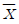
= 3(Me-Mo)
(정답률: 29%)
90. 다음 중 가설검정에 관한 설명으로 옳은 것은?
- 제2종의 오류를 유의수준이라고 한다.
- 동일한 유의수준에서 단측검정의 기각영역이 양측검정 보다 넓다.
- 고전적 가설검정의 결과와 구간추정의 가설검정 결과는 언제나 반대로 나타난다.
- P- 값은 귀무가설 또는 대립가설을 입증하는 정도와 상관없는 개념이다.
(정답률: 40%)
91. 5명의 흡연자를 무작위로 선정하여 체중을 측정하고, 금연을 시킨 뒤 4주 후에 다시 체중을 측정하였다. 금연 전후에 체중 변화를 알아 보기 위하여 올바른 가설검정을 위한 검정통계량은?
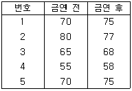
- -1.77
- -0.48
- -0.32
- -0.21
(정답률: 25%)
92. k 개 처리에서 n회씩 실험을 반복하는 일원배치모형 xij = μ + αi + εij에 관한 설명으로 틀린 것은? (단, i=1,2,…,k 이고, j=1,2,…,n 이며 εij ∼ N(0,σ2))
- 오차항 εij 들의 분산은 같다.
- 총실험 횟수는 k × n 이다.
- 총평균 μ 와 i번째 처리효과 αi는 서로 독립이다.
- Xij 는 I번째 처리의 j번째 관측값이다.
(정답률: 43%)
93. X1,X2,…,Xm은
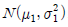
으로부터 랜덤표본이고, Y1,Y2,…,Yn 은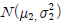
으로부터 랜덤표본이고, 서로 독립이라고 한다. 두 랜덤표본의 표본분산이 각각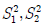
일 때,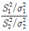
는 어떤 분포를 따르는가?- F(m,n)
- F(m-1,n-1)
- X2(m-1)
- X2(n-1)
(정답률: 38%)
94. 동일한 모집단으로부터 표본을 보다 더 많이 조사하여 얻을 수 있는 이득으로 옳은 것은?
- 표준편차가 작아진다.
- 표준오차가 작아진다.
- 표준편차가 커진다.
- 표준오차가 커진다.
(정답률: 45%)
95. 모집단으로부터 추출된 크기 100의 랜덤표본에서 구한 표본 비율이
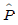
= 0.42 이다. 귀무가설 H0:P = 0.4 와 대립가설 H1:P > 0.3 을 검정 하기 위한 검정통계량은?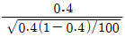
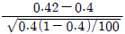
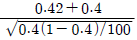
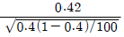
(정답률: 47%)
96. 가설검정 시 유의확률(p값) 과 유의수준(α level)의 관계에 대한 설명으로 옳은 것은?
- 유의확률 < 유의수준일 때 귀무가설을 기각한다.
- 유의확률 ≥ 유의수준일 때만 귀무가설을 기각한다.
- 유의확률 ≠ 유의수준일 때 귀무가설을 기각한다.
- 유의확률과 유의수준 중 어느 것이 큰가하는 문제와 가설검정과는 아무런 관계가 없다.
(정답률: 50%)
97. 어떤 화학제품의 중요한 품질 특성의 하나로, 점도 Y가 문제되고 있다. 점도에 영향을 미치는 주요 요인인 반응온도 X 와의 관계를 알아보기 위하여 단순회귀분석을 실시하기로 하였다. 20번의 실험을 하여 X와 Y를 관측한 자료를 정리하여 다음의 결과를 얻었다. 추정된 회귀직선을 바르게 표현한 것은?
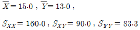
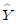
= 4.56-0.5625X = 4.56+0.5625X
= 4.56+0.5625X = -4.56-0.5625X
= -4.56-0.5625X = -4.56+0.5625X
= -4.56+0.5625X
(정답률: 39%)
98. 어느 버스 정류장에서 매시 0분, 20 분에 각 1회씩 버스가 출발한다. 한 사람이 우연히 이 정거장에 와서 버스가 출발할 때까지 기다릴 시간의 기댓값은?
- 15분 20초
- 16분 40초
- 18분 00초
- 19분 20초
(정답률: 36%)
99. 단순회귀모형 Yi=α+βXi+εii(i=1,2…,n)을 적합하여 다음을 얻었다.
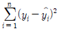
= 200,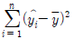
= 300 이때 결정계수 r2을 구하면? (단,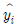
는 i번째 추정값을 나타냄)- 0.4
- 0.5
- 0.6
- 0.7
(정답률: 34%)
100. 다음과 같이 j 는 집단을, i는 관찰값을 나타내는 일원분산분석의 기본 모형에 관한 설명으로 틀린 것은?
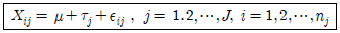
- εij는 서로 독립이고, 평균 0, 분산 σ2을 따르는 정규 분포를 가정한다.
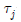
는 각각의 집단평균(μj)과 전체평균(μ)과의 차이를 나타낸다.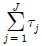
> 0 을 만족한다.- μ1=μ2=... μj를 가설 검정한다.
(정답률: 33%)